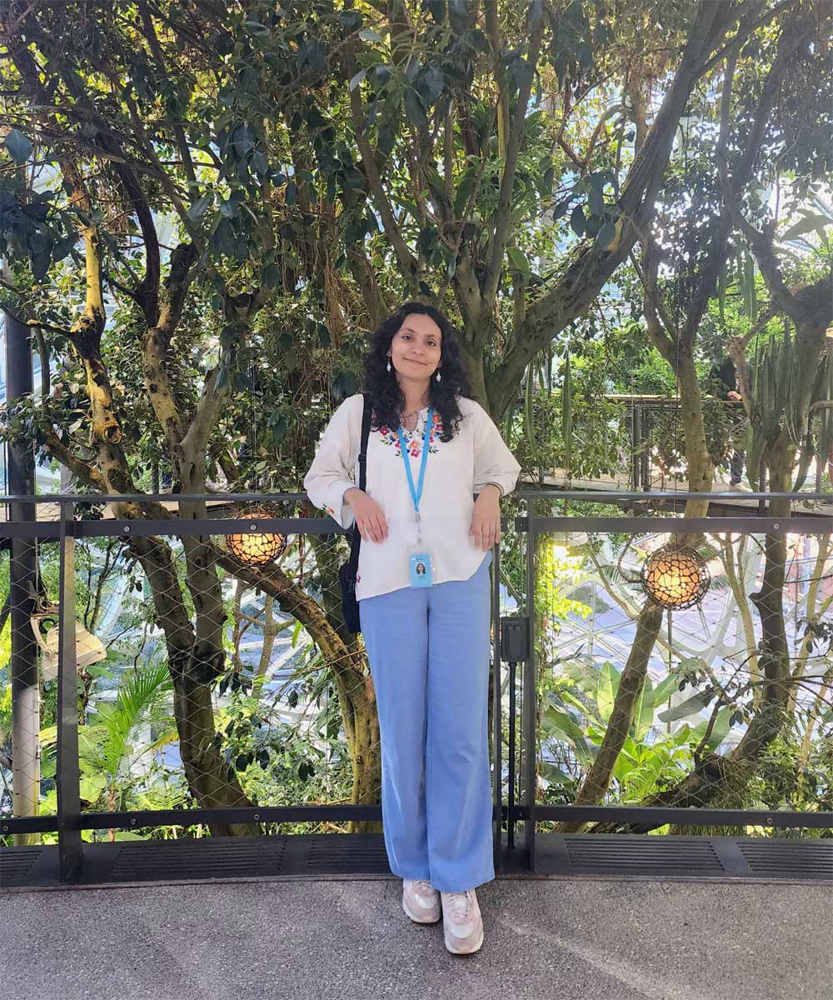
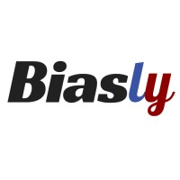
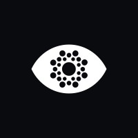

About me
I am a UI/UX designer based in Philadelphia who enjoys the challenge of creating engaging digital experiences. What I love most about UI/UX is the variety of problems it can address, as well as the cross-functional teamwork required to tackle these challenges. I have experience in UI/UX Design and user testing at Amazon, Graditude, Biasly, ZeroEyes, and Coded By:. Currently, I'm designing and developing websites and apps as a student @ Drexel University.
In my free time, I enjoy making art in any form, as well as reading, traveling, and paddle boarding.
Resume
Education
Work Experience
Digital Customer Experience Intern @ Acuity Insurance
Improved customer journeys in Figma from customer feedback, ran stakeholder and competitive research, and enhanced accessibility across Acuity's digital experiences.
- Utilized customer feedback to create improved customer journeys via Figma.
- Conducted and synthesized user research including stakeholder interviews and competitive analysis.
- Enhanced accessibility in Acuity's digital experiences.
- Contributed to journey mapping and CX metric collection.
UX Designer Intern @ Amazon
Redesigned an internal incident-reporting tool with a scalable Figma design system and led mixed-methods research with 15+ participants to validate pain points and guide product direction.
- Redesigned core interfaces on the Worldwide Operations Security team for an internal incident reporting tool by implementing a scalable design system in Figma, improving usability and consistency across workflows for agents.
- Led mixed-methods user research (5+ interviews, 5+ contextual inquiries, usability testing) with 15+ participants, validating seven usability pain points and translating insights into actionable design recommendations.
- Balanced industry and business needs by conducting competitor analyses, including stakeholder interviews and a visual audit of 5+ competitors, resulting in informed designs.
- Delivered data-backed strategy recommendations through research synthesis in Dovetail and internal AI tools, creating user personas, validating findings via surveys and writing final reports to guide product direction.
UX/UI Design Intern @ Graditude
Designed a scalable admin-matching flow for a mentorship social network and built new design-system components in Figma, validated through research and cross-functional feedback.
- Created a core admin matching user flow for a mentorship-focused social network that is scalable for 100+ members, allowing campus org leaders to match potential mentors and mentees.
- Designed low and high-fidelity website prototypes on Figma and contributed new components with multiple states for the company design system (cards, chips, & buttons).
- Validated design work by synthesizing past research and engaging in empathy mapping, competitor analysis, affinity mapping, and conducting 5+ user interviews.
- Informed design decisions by integrating feedback from 1 designer, 1 engineer, and the company founder and reporting tasks to the design lead using ClickUp & Slack.

UX Design Intern @ Biasly
Redesigned 10+ educational pages and built 20+ reusable, accessible UI components in Figma, backed by research with 50+ users.
- Redesigned 10+ educational website pages & graphics in Figma for a news website providing bias ratings & analytics.
- Enhanced the website's visual language by designing 20+ reusable UI components such as icons, cards, images, & data visualizations, creating engaging layouts that ensured accessibility and supported a cohesive design system.
- Validated design decisions by conducting and synthesizing research with 50+ users through surveys, user interviews, and open card sorting via Google Forms and Zoom.
- Incorporated stakeholder feedback through Nifty to iterate rapidly and communicate project progress to the supervisor.
UX Designer Intern @ Amazon
Designed data-driven flows, wireframes, and mobile concepts to improve Amazon's delivery instructions, grounded in driver interviews and competitive and customer research.
- Designed data-driven user flows, wireframes, and mobile concepts that improved delivery experiences and informed future iterations, managing cross-functional deliverables in Asana for the Delivery Experience team.
- Used Figma to create ideations and mockups redesigning delivery instructions in the Amazon shopping app.
- Synthesized key customer problems by summarizing past reports, interviewing delivery drivers, and conducting market research through analyzing 5 competitors & 50+ customer insights.
- Employed AI tools within UserTesting to collect user feedback from 8+ customers, initiating project handoff in a comprehensive final project brief to the team.
- Contributed to design critiques during weekly meetings to improve the Amazon delivery experience for customers.

Marketing Design Intern @ ZeroEyes
Launched a partnership webpage and produced brand-focused marketing designs across Figma, WordPress, and Adobe tools, driving user acquisition for an AI security company.
- Launched a high-visibility Partnership webpage for an AI security company by collaborating cross-functionally, defining the content strategy, information architecture, and UI layout to promote new business partnerships.
- Utilized Figma, WordPress, After Effects, Canva, Photoshop, & Audition to create brand-focused designs, including 10+ marketing templates, 50+ social media posts, and an animated video driving user acquisition across all channels.
- Created a brand guideline presentation to maintain a consistent visual design across all digital assets.
UI/UX Intern @ Coded By:
Wireframed and prototyped a program-finding website for Philadelphia parents in Figma and Miro, building a cohesive design system validated through usability testing.
- Collaborated cross-functionally in Miro and Figma to wireframe and prototype for a program-finding website helping working parents find after-school programs in Philadelphia.
- Worked in Figma to build a comprehensive website design, including a visually compelling design system with microinteractions and vector assets.
- Validated 5+ desktop webpage designs via market research and competitive usability testing.
- Presented design iterations in daily collaborative meetings to drive project objectives and team discussions.
Project Experience
Project Manager & Designer @ Drexel University
Led a 6-person team to design a mobile app for discovering affordable local activities, managing Agile timelines in Jira and shipping a tested user flow in TestFlight.
- Directed a 6-person cross-functional team to design a mobile app helping young adults discover affordable local activities in Philadelphia.
- Delivered a fully functional critical user flow in TestFlight, achieving 100% positive feedback from 5+ usability testers.
- Managed Agile project timelines in Jira, organizing work into Epics to align the team's UX, research, data architecture, and development efforts.
- Facilitated weekly team meetings, leveraging UX research insights from 60 users to validate and refine features.
- Designed low- to high-fidelity prototypes in Figma and built a component-based design system with microinteractions to improve usability.
UX Researcher & Designer @ Drexel University
Researched the Dropout streaming platform through interviews and 200+ survey responses, then translated insights into a journey map and an animated user story.
- Analyzed target users of the Dropout streaming platform and provided key UX recommendations by interviewing 5+ customers and synthesizing findings from 200+ online survey responses.
- Created a journey map and storyboards in Figma and used After Effects to animate a compelling user story.
Toolbox
- Figma
- UserTesting
- Dovetail
- Photoshop
- Illustrator
- After Effects
- Premiere Pro
- Audition
- WordPress
- Miro
- Balsamiq
- Asana
- Jira
- ClickUp
- Monday
- Nifty